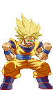
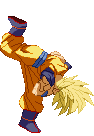

activate Justice Mode (LV2)
Activating Justice Mode makes Goku get serious! As an opponent of SSJ Goku, this is really something you want to avoid!
A few things change in his gameplay.
-At activation, you will see an empty Justice Bar (fills up blue), a full buffer bar (orange) and a grey kanji added to the screen. The Justice Bar fills up into 3 levels, indicated by the Kanji: grey = Lv0, yellow = Lv1, orange = Lv2 and red = Lv3 (max).
- In Justice mode, Goku loses Power Charge.
- The Justice Bar fills by performing Teleports.
- The buffer bar drains by performing Teleport Attacks.
- If the buffer bar is completely empty, the mode is cancelled.
- In Justice Mode, Goku gains access to the Teleport Attacks (detailed below).
- Ultimate Rush costs Lv2 instead of Lv3 and cancels the Mode upon activation.
- Depending if you're on Lv1, 2 or 3 of the Justice Bar, Goku will perform a unique and powerful Finisher at the end of the Ultimate Rush.
-At activation, you will see an empty Justice Bar (fills up blue), a full buffer bar (orange) and a grey kanji added to the screen. The Justice Bar fills up into 3 levels, indicated by the Kanji: grey = Lv0, yellow = Lv1, orange = Lv2 and red = Lv3 (max).
- In Justice mode, Goku loses Power Charge.
- The Justice Bar fills by performing Teleports.
- The buffer bar drains by performing Teleport Attacks.
- If the buffer bar is completely empty, the mode is cancelled.
- In Justice Mode, Goku gains access to the Teleport Attacks (detailed below).
- Ultimate Rush costs Lv2 instead of Lv3 and cancels the Mode upon activation.
- Depending if you're on Lv1, 2 or 3 of the Justice Bar, Goku will perform a unique and powerful Finisher at the end of the Ultimate Rush.



Teleport Attacks / Pursue Attacks
These attacks are basically free teleport attacks like Normal Goku's Bicycle Kick; Goku teleports right beside the opponent
and then hits them with a hard-hitting aerial attack. Forward/Backward version performs the Smash Punch, the up version a Flash Kick and the down version a Bicycle Kick,
and upon impact the opponent is knocked into that direction. You can combo three of these in a row.
Beware; they fill your Justice Bar, but they also drain the buffer bar. When it's completely empty, the Justice Mode is cancelled out. Using Teleport Attacks means you won't be able to reach Lv3 of the Justice Mode before it's cancelled out.
Beware; they fill your Justice Bar, but they also drain the buffer bar. When it's completely empty, the Justice Mode is cancelled out. Using Teleport Attacks means you won't be able to reach Lv3 of the Justice Mode before it's cancelled out.